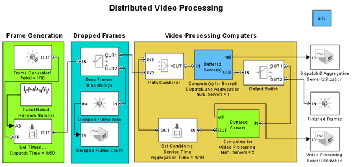

Distributed Video Processing
Contents
Overview
This model illustrates a high-level algorithm for processing video frames using distributed computed resources. This model and the Distributed Processing Resource Modeling demo jointly demonstrate how you can prototype an architecture or algorithm at a high level and later introduce refinements.
Structure
The model includes
- The Frame Generation section, which generates video frames at a fixed rate and assigns each frame several pieces of data that represent the processing time constants. In this part of the model, each entity represents a frame of video data.
- The Dropped Frames section, which discards frames that the video processing computers can neither process nor store immediately.
- The video-Processing Computer section.
The Video-Processing Computers section processes entities iteratively in this sequence:
- The Computer(s) for Shared Dispatch and Aggregation subsystem models the process of dispatching each frame to one of multiple processors.
- The Computers for Video Processing subsystem models the video processing for the frame.
- Frames return to the Computer(s) for Shared Dispatch and Aggregation subsystem, which models the process of sequencing the frames after the video processing is complete.
The loop is not infinite because the Output Switch block selects an output port based on an attribute that reflects the entity's stage of processing. When processing is complete, the entity advances to the block labeled Finished Frames.
Experimenting with the Model
Run the simulation with default settings. From the plot labeled Count of Dropped Frames, you can see that the system drops many frames throughout the simulation. You can vary these parameters in the demo to see the effect on the rate at which the system drops frames:
- The number of servers in the Computer(s) for Shared Dispatch and Aggregation subsystem
- The number of servers in the Computers for Video Processing subsystem
Experimenting Further
The Distributed Processing Resource Modeling is similar to this model, but introduces refinements such as partitioning each frame for independing processing.